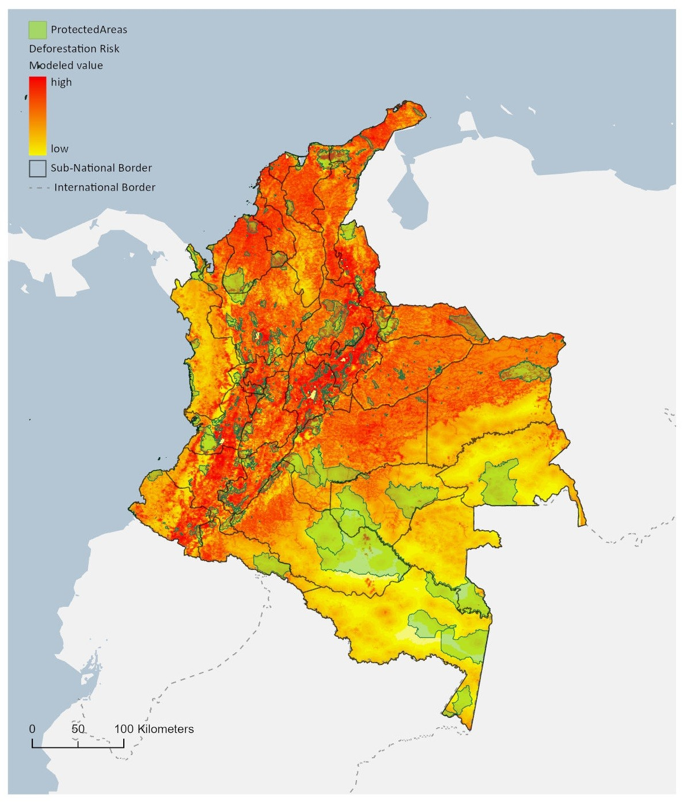

WWF · COLOMBIA · DEFORESTATION DRIVERS
Understanding deforestation risk.
I analyzed environmental and human-accessibility predictors associated with deforestation in Colombia, comparing alternative statistical specifications and evaluating how well they generalized beyond the fitted data.
01Project summaryStudy overview
I investigated geographic and land-use factors associated with deforestation in Colombia, using the original model comparison table and risk map to document the analysis.
02Deforestation-risk mapMap from WWF research
The original WWF work document includes a Colombia deforestation-risk map labeled as a Random Forest analysis. This map is a separate model output from the GLM comparison table below; I do not treat the two as results from the same fitted model.

03Model comparison and methodologyFull, Stepwise, Naive, RAC
I used binomial generalized linear models to examine how slope, elevation, distance to roads and cities, land-cover characteristics, and other variables related to observed deforestation. I compared a full model, a stepwise-selected model, a simple elevation-only baseline (naive), and a residual-autocovariate (RAC) specification designed to account for spatial dependence.
The table below reproduces the coefficients and accompanying values from my original WWF work document. Significance symbols and blank entries are preserved as reported; the table should not be interpreted as a causal-effects analysis. The numerical values are historical outputs and have not been recalculated.
| Variable | Full | Stepwise | Naive | RAC |
|---|---|---|---|---|
| Slope | -0.187*** | -0.184*** | — | -0.185*** |
| — | -0.008 | -0.007 | — | -0.007 |
| Elevation | 0.0001* | 0.0001* | -0.001*** | 0.0001* |
| — | -0.0001 | -0.0001 | -0.00003 | -0.0001 |
| Universal_Mills_Dist | -0.002*** | -0.002*** | — | -0.003*** |
| — | -0.0003 | -0.0002 | — | -0.0002 |
| Main_Cities_Dist | -0.004*** | -0.004*** | — | -0.004*** |
| — | -0.001 | -0.001 | — | -0.001 |
| Rivers_Dist | 0.016*** | 0.016*** | — | 0.017*** |
| — | -0.003 | -0.003 | — | -0.003 |
| Rd_Prim_Sec_Dist | -0.024*** | -0.024*** | — | -0.025*** |
| — | -0.001 | -0.001 | — | -0.001 |
| PAs_Dist | -0.001 | — | — | — |
| — | -0.001 | — | — | — |
| Tr_Oil_Palm_Dist | -0.0002 | — | — | — |
| — | -0.0001 | — | — | — |
| Ld_Woodland_Mosaic_Dist | 0.012*** | 0.010*** | — | 0.010*** |
| — | -0.003 | -0.003 | — | -0.003 |
| Ld_Grasslan_Dist | -0.001 | — | — | — |
| — | -0.002 | — | — | — |
| Ld_Savanna_Dist | 0.023*** | 0.024*** | — | 0.024*** |
| — | -0.003 | -0.002 | — | -0.002 |
| Ld_Dryland_Cropland_Pasture_Dist | -0.006*** | -0.007*** | — | -0.007*** |
| — | -0.002 | -0.002 | — | -0.002 |
| Ld_Cropland_Grassland_Mosaic_Dist | 0.0003 | — | — | — |
| — | -0.014 | — | — | — |
| Rd_Prim_Sec_Km | 0.038 | 0.041 | — | 0.039 |
| — | -0.026 | -0.026 | — | -0.026 |
| Riv_Km | -0.002 | — | — | — |
| — | -0.007 | — | — | — |
| Operated_Contracts_SqKm | 0.048*** | 0.048*** | — | 0.048*** |
| — | -0.007 | -0.006 | — | -0.006 |
| PAs_SqKm | -0.097*** | -0.093*** | — | -0.091*** |
| — | -0.01 | -0.009 | — | -0.009 |
| Tr_Banana_SqKm | -0.302*** | -0.295*** | — | -0.294*** |
| — | -0.094 | -0.093 | — | -0.093 |
| Tr_Gr_Palms_SqKm | -0.125* | -0.116* | — | -0.120* |
| — | -0.065 | -0.065 | — | -0.064 |
| Tr_Oil_Palm_SqKm | 0.061 | — | — | — |
| — | -0.108 | — | — | — |
| Ld_Irrigated_Cropland_and_Pasture_SqKm | -0.329*** | -0.343*** | — | -0.342*** |
| — | -0.1 | -0.101 | — | -0.102 |
| Ld_Cropland_Grassland_Mosaic_SqKm | 0.061** | 0.060** | — | 0.061** |
| — | -0.024 | -0.024 | — | -0.024 |
| Ld_Cropland_Woodland_Mosaic_SqKm | 0.003 | — | — | — |
| — | -0.013 | — | — | — |
| Ld_Grassland_SqKm | -0.102*** | -0.100*** | — | -0.099*** |
| — | -0.03 | -0.03 | — | -0.03 |
| Ld_Savanna_SqKm | -0.019 | — | — | — |
| — | -0.013 | — | — | — |
| Clust_150km | 0.005 | — | — | 0.001 |
| — | -0.017 | — | — | -0.015 |
| Col_ac | — | — | — | 0.002 |
| — | — | — | — | -0.001 |
| Constant | 2.118*** | 2.056*** | 0.262*** | 2.069*** |
| — | -0.157 | -0.103 | -0.023 | -0.124 |
04Data and resultsHistorical outputs
The map and model comparison table are results from my original WWF work. The original datasets are not available to me at this time, so I cannot reproduce the historical model outputs.
The underlying research code and documentation are available in the Deforestation-Research GitHub repository linked above.
05Why it mattersResearch applications
Mapping deforestation risk and identifying associated geographic factors can help prioritize further investigation and conservation planning. This project illustrates how I combine GIS-derived predictors, statistical modeling, and validation to investigate land-use change.